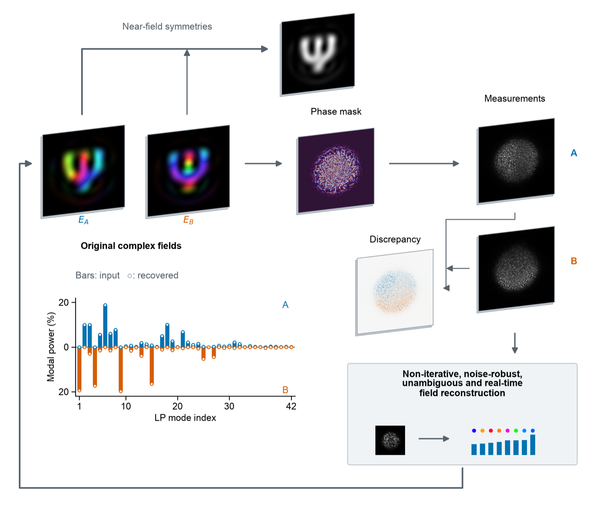

Interferometry
Digital holography measures amplitude and phase accurately but needs a stable reference beam, careful calibration and active stabilisation. That makes it hard to use on a factory floor.
Royal Society Industry Fellowship · 2026–2029
Rapid Optical Mode Evaluation and Observation
Cameras record only intensity, but light also carries phase. ROMEO recovers the full complex field of a multimode fibre from one camera image: a fixed optical element breaks the symmetries that hide the phase, and a stored linear inverse reads the field out in milliseconds.
The problem
Light in a multimode fibre travels as a superposition of guided modes. Their powers tell us where the energy is; their relative phases set the wavefront. Measuring both, a process called mode decomposition, matters for fibre lasers, telecommunications, sensing and imaging. Cameras and photodetectors, however, only see intensity.
Digital holography measures amplitude and phase accurately but needs a stable reference beam, careful calibration and active stabilisation. That makes it hard to use on a factory floor.
Gerchberg–Saxton and gradient-based methods need no reference arm, but they are computationally heavy and do not generally guarantee a unique answer.
Direct linear inversion of the intensity is very fast, but the symmetry of fibre modes makes the problem ill-conditioned, so it has been limited to a handful of modes.
The idea
For a field made of M known modes, the intensity at every pixel is linear in the pairwise products of the modal coefficients:
Stacking pixels gives . If the pairwise-mode-product (PMP) matrix is well conditioned, one stored pseudo-inverse and a rank-one projection return every amplitude and phase from a single frame.
The catch is symmetry. Viewed directly, circularly symmetric fibre modes produce many products that are identical or nearly so. Physically different fields then give the same image; we call this measurement degeneracy. No algorithm can recover information the optics have already discarded.
There is also a hard limit. Every pixel responds to total power with the same sign, so for any linear optics and any detector : 3.3 for ten modes, 6.6 for 42. This floor is the benchmark a measurement design is judged against.
Optimise a static phase transform (a phase mask followed by free-space propagation) to minimise the condition number while keeping the light on the detector.
Measure how each mode appears on the camera and store the inverse of the PMP matrix. The phase element can be an SLM, a static phase plate or even a ground-glass diffuser.
Multiply each camera frame by the stored inverse and project onto rank one. There is no iterative phase retrieval, so the computation takes about two milliseconds.
Hands-on
A simulated step-index fibre, observed through the paper's optimised phase mask. Drag the phasors to set the field in the fibre, choose how it is observed, and watch the field be reconstructed from intensity alone. All the processing runs live in your browser.
Hue = phase, brightness = intensity
Intensity only
Υ⁺ I → rank-one projection, aligned for global phase
Simulation: the paper's optical system (633 nm, NA 0.10, a lens, a 1024×1024 phase plane at 8 µm with the optimised mask, and a camera 68.6 mm behind it). The camera here is 128×128 pixels over its central 4.1 mm, with the field evaluated at each pixel's centre; the near field is a 64×64 image of the core. The pseudo-inverses are precomputed. Noise is additive Gaussian, with the SNR defined for a fully captured beam, so light lost off the detector really costs signal.
Simulations
Full-scale simulations of a 42-mode fibre (1,764 unknown products per frame, a megapixel camera) show that one engineered phase mask makes every pairwise product distinguishable.

Each point is one phase mask in the same simulated 42-mode system. A useful mask sits at the bottom right: a low condition number, with the light kept on the detector.
All 12 optimised masks reach κ below 25 with at least 98% of the light captured. None of the random masks meets both targets: fine-grained ones are well conditioned but scatter most of the light away, and coarse ones keep the light but stay poorly conditioned.
The mask designed for 42 modes is kept fixed while the fibre core changes. Median error of the recovered modal coefficients over 1,000 random fields per point, against camera noise.
In the near field, groups of different mode pairs produce exactly the same pattern, so their coefficients cannot be separated. After the engineered transformation the patterns are distinct. The PMP matrix goes from singular to well conditioned.
The same optimisation applied to 36 Hermite–Gaussian beams and to 41 modes of a square integrated waveguide gives κ ≈ 14 and κ ≈ 18 at 98% mean capture.
The mask optimised for the fibre also works unchanged for those two mode families, with κ = 16.8 and 24.1. Re-optimising for each family improves both.
Experiment
A 42-mode fibre is excited with thousands of different fields. One camera records the symmetry-broken intensity used for reconstruction; a second records an off-axis hologram used only for calibration and for checking the answer. The phase element is either an SLM showing the optimised mask or a plain ground-glass diffuser.
Every field below was reconstructed from one intensity image and compared with its hologram. Pick an acquisition and scrub from the best to the worst case.
Fields are drawn from the published modal coefficients in the released LP basis (hue = phase, brightness = intensity). The error against the full hologram also counts noise and light outside the 42 modes in the reference itself, which is why it is larger than the error against the 42-mode content. Only fields whose holograms passed the reference-quality checks are shown.
From a raw 1,024×1,280 frame to 42 complex weights takes a median of 2.1 ms on a consumer GPU (RTX 3090), about 480 frames per second one at a time. In batches the throughput is 4,000–4,200 frames per second.
With the same inverse and the same basis, near-field intensity keeps only 286 of the 1,764 product directions and gives a median field error of 94%. The symmetry-broken measurement is what makes the reconstruction possible.
In the SLM acquisition, the camera image re-synthesised from the recovered weights matches the measured one to a median of 1.5%, equally for fields whose holograms were excluded.
The fellowship
Both the algorithms and the laboratory validation are complete, well ahead of the original four-year plan shown below. Industrial evaluation with Arden Photonics comes next.
Read more
Preprint · 2026
Engineering the optical measurement to break modal symmetries enables direct reconstruction of the complex field from a single intensity image. A phase mask followed by propagation is optimised to separate pairwise modal signatures while keeping light on the detector; a calibrated linear inverse and a rank-one projection then recover modal amplitudes and relative phases without iterative phase retrieval.
Who
Royal Society Industry Fellow · Research Fellow
Aston Institute of Photonic Technologies, Aston University. Works on mode decomposition and optical computing.
Industrial partner
A UK specialist in optical fibre measurement and inspection instruments. It hosts on-site validation and integration of ROMEO into industrial measurement systems.
Funder
The Industry Fellowship scheme supports academic–industry collaboration. ROMEO is a four-year fellowship (2026–2029) between Aston University and Arden Photonics.